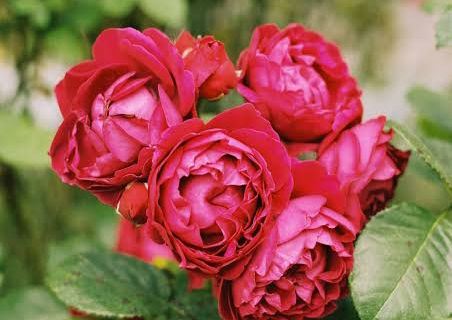

FLOWERING PLANT
Rose
Rosa spp.
A beloved flowering plant known for its beautiful blossoms, fragrance and remarkable diversity.

A CLOSER LOOK
🌹 Anatomy of a Rose
A rose flower is made up of several structures that work together in reproduction and protection.
Petals
The colourful petals attract pollinators and give the flower its distinctive appearance.
Stamens
The stamens are the male reproductive structures that produce pollen.
Pistil
The pistil is the female reproductive structure involved in seed formation.
Sepals
Sepals protect the developing flower bud before it opens.
BOTANICAL PROFILE
🌿 Flower Characteristics
LIFE & REPRODUCTION
🐝 Pollination
Roses can be visited by bees and other insects that transfer pollen between flowers. This helps the plant reproduce and eventually produce seeds.